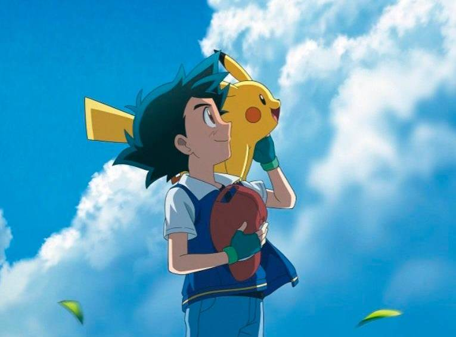
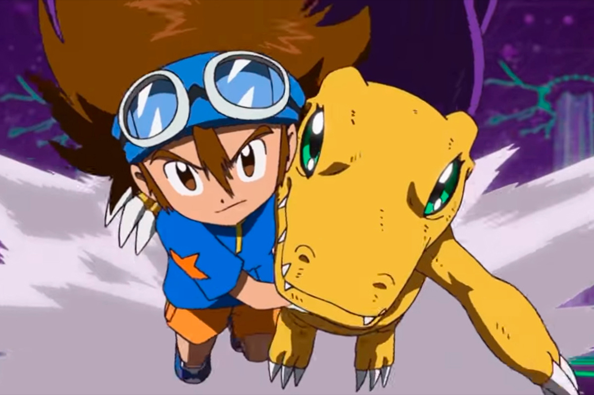
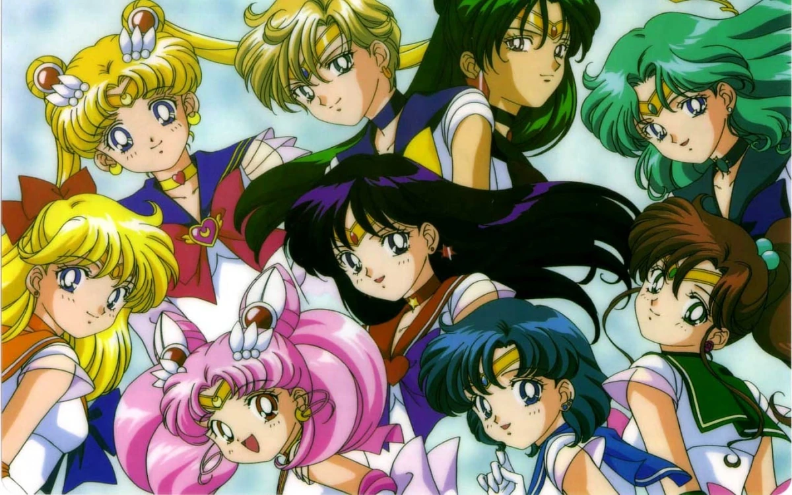

Actividad Complementaria
habia una vez...
En la Universidad de Ciencias Paranormales, los profesores Jheyson y Magnolia preparaban un emocionante torneo que reuniría a estudiantes de diferentes dimensiones y universos.
Mientras tanto, en el mundo Pokémon, Ash y Pikachu se preparaban para participar en un torneo especial de habilidades Pokémon.

Durante el torneo, un malvado virus digital se filtró en el sistema informático, amenazando con corromper todas las realidades y dimensiones conectadas a través de la red. Mientras Ash luchaba con valentía junto a sus Pokémon, los elegidos de Digimon se enfrentaban a este virus en el mundo digital.

Mientras tanto, las Sailor Scouts detectaron perturbaciones en la energía mística y se unieron al esfuerzo para proteger la
de sus universos.

Jheyson y Magnolia, conscientes de la gravedad de la situación, desplegaron sus conocimientos en ciencia paranormal para ayudar a contener la amenaza.
A través de una colaboración interdimensional sin precedentes, los héroes lograron rastrear y purgar el virus, restaurando la estabilidad en todos los mundos. Al final del torneo, se forjaron amistades sólidas entre los participantes de los diferentes universos, dejando un legado duradero de cooperación y amistad entre mundos.